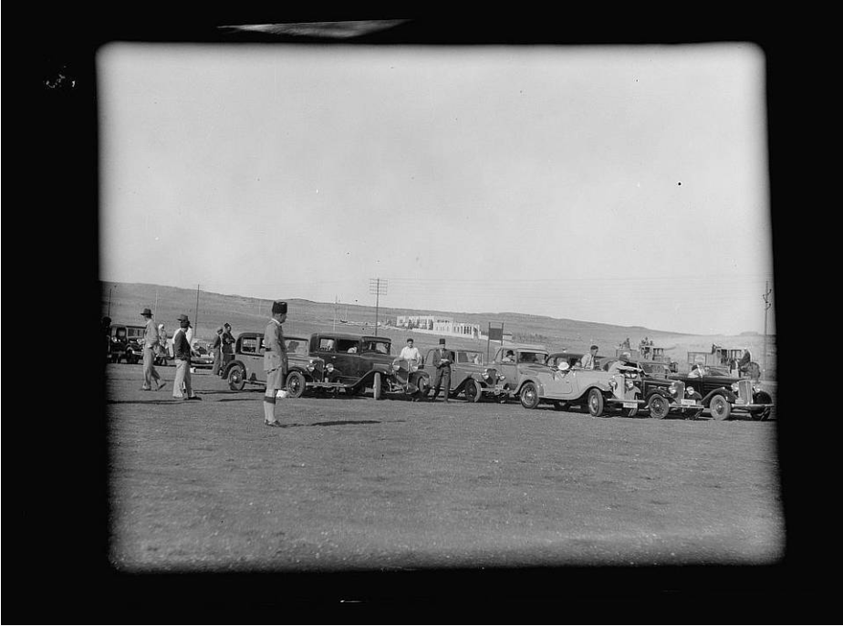
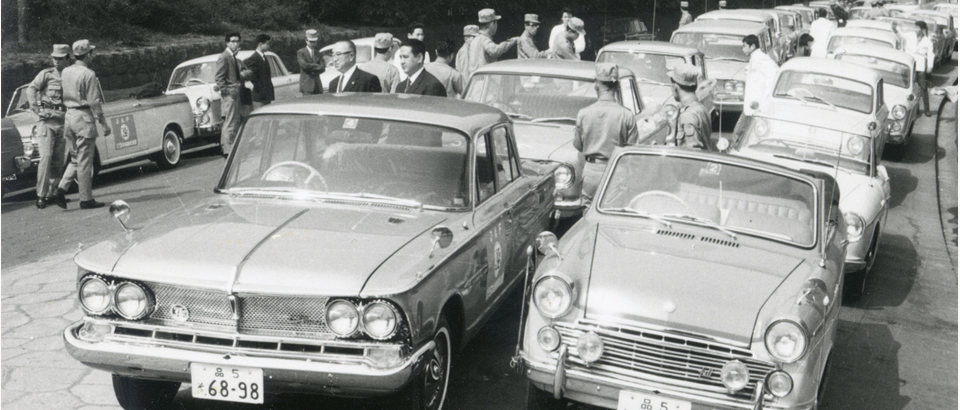
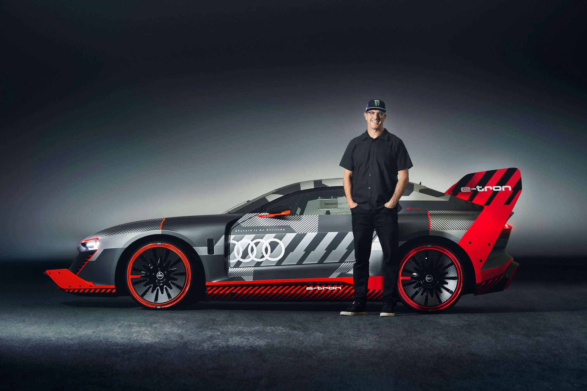

Le gymkhana automobile tire ses racines du mot indien "gymkhana",
qui
désignait à l’origine des compétitions d’adresse équestres
organisées par les
officiers britanniques en Inde au XIXe siècle. Ces épreuves
mettaient en avant
la précision et le contrôle du cheval, plutôt que la vitesse. Avec
le temps, ce
concept s’est adapté à d’autres formes de sports mécaniques,
notamment la
moto et l’automobile.
L’apparition dans le monde automobile

C’est dans les années 1940-1950 que le gymkhana automobile est né,
d’abord au Royaume-Uni et aux États-Unis. Les conducteurs
cherchaient à
tester leurs capacités de pilotage sur de petits circuits fermés,
souvent
improvisés sur des parkings ou des terrains plats. Les épreuves
consistaient à
manœuvrer entre des cônes, des barrières ou des obstacles, en
réalisant des
virages serrés, des demi-tours et des freinages précis.
Le développement au Japon

Le Japon a joué un rôle majeur dans la popularisation du gymkhana.
Dès les
années 1970, les pilotes japonais ont commencé à organiser des
compétitions
officielles, soutenues par la Japan Automobile Federation (JAF). Le
gymkhana y est devenu une discipline reconnue, avec des règlements
stricts
et des catégories selon la puissance et le type de véhicule. C’est
aussi au
Japon que le sport a pris un aspect plus technique et spectaculaire,
avec des
pilotes cherchant la perfection dans la précision.
L’arrivée dans la culture populaire
Dans les années 2000, le gymkhana a gagné une visibilité mondiale
grâce à
Internet et à des pilotes célèbres comme Ken Block. Ses vidéos
spectaculaires, publiées sur YouTube sous le nom de “Gymkhana
Series”, ont
montré des voitures ultra-préparées exécutant des manœuvres
impressionnantes dans des environnements urbains ou industriels. Ce
style
mêlant drift, vitesse et précision a rendu la discipline populaire
auprès d’un
large public.
Les voitures utilisées
Dans le gymkhana, presque tous les types de voitures peuvent être
utilisés, du petit modèle à traction avant jusqu’à la voiture de
rallye hautement modifiée. Les modèles les plus célèbres sont
souvent des Subaru Impreza WRX STI, Ford Fiesta ST, ou Mitsubishi
Lancer Evolution. Ces véhicules sont choisis pour leur maniabilité,
leur puissance contrôlable et leur capacité à effectuer des drifts
précis sur de courtes distances.
Le gymkhana aujourd’hui

Depuis la mort tragique de Ken Block en 2023, la communauté du
gymkhana lui
rend régulièrement hommage. Sa série de vidéos continue d’inspirer
de nouveaux
pilotes et créateurs de contenu.
Le gymkhana reste aujourd’hui un mélange entre art du pilotage et
performance
visuelle. Il est pratiqué dans le monde entier, aussi bien en
compétition officielle
qu’en démonstration, et continue d’évoluer grâce aux innovations
techniques et à la
passion des conducteurs.